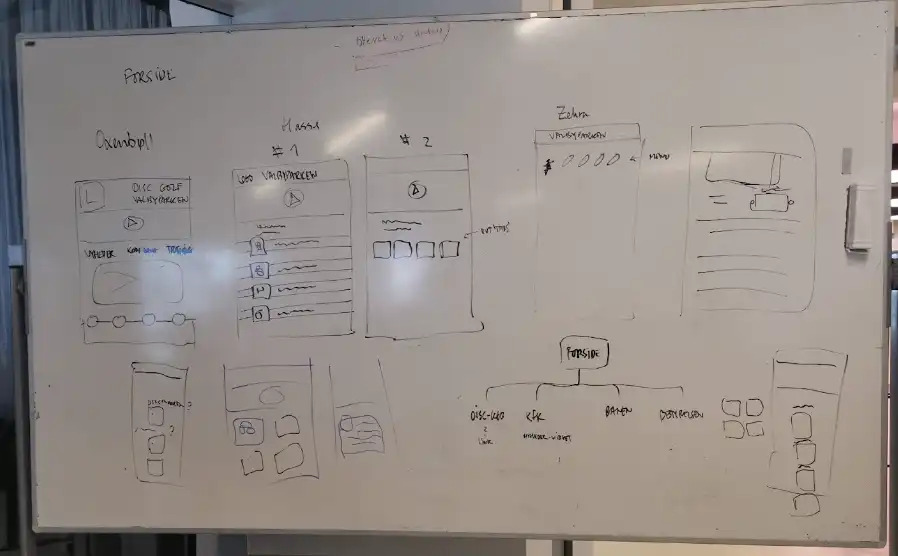
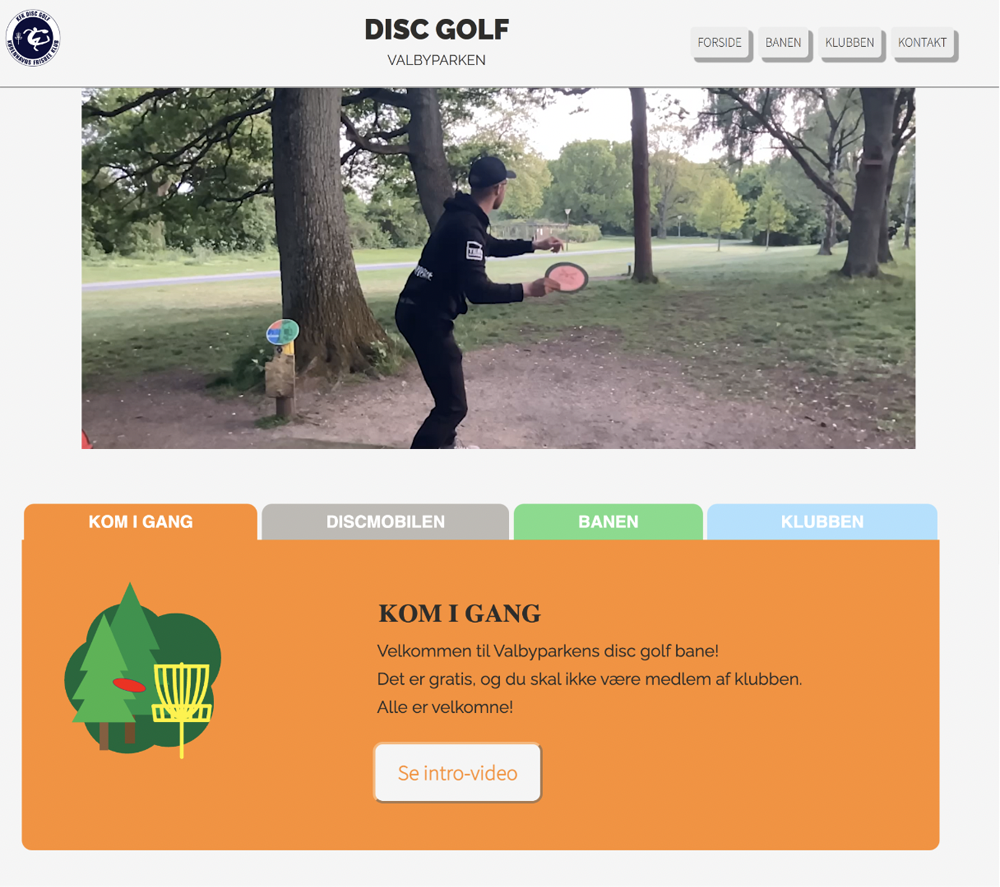
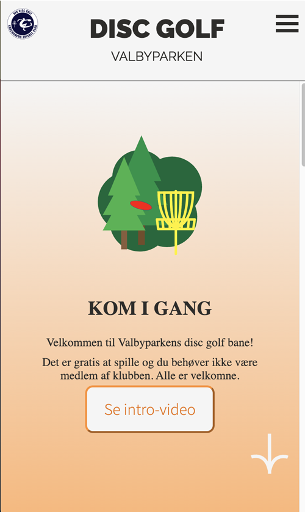

A. Skitser
Vi gik straks i gang med at brainstorme på, hvordan dette site kunne være organiseret og se ud.
Den altoverskyggende tanke var at forsimple og koncentrere indholdet, for at gøre det så intuitivt og brugervenligt som muligt. Vi designede sitet med en idealbruger for øje, der var helt ny i sporten, og som ønskede svar på oplagte, relevante spørgsmål.


B. Wireframes
Vi udarbejdede wireframes til mobil og web.
Vi fulgte konventionen om at have logo i øverste venstre hjørne, der fungerede som "hjem"-knap. Vi besluttede desuden at have en banner-video kørende, som med det samme kunne fortælle den besøgende hvad sitet gik ud på.
Vi koncentrerede indholdet til det allermest relevante, så en person der ville prøve disc golf hurtigt kunne få svar på de væsentligste aspekter af at komme i gang.
Dette blev til 4-5 faneblade:
- 1. "Kom i gang" - Her placerede vi en kort informationstung video (hvilke discs, hvor de kan købes, hvordan man spiller, og hvad der er god etikette på banen).
- 2. "Discmobilen" - Information om, hvornår det er muligt at købe discs i Valbyparken samt link til online køb.
- 3. "Banen" - Overordnet information om banen, banekort, scorekort, samt direkte link til disc golf app'en uDisc.
- 4. "Klubben" - Hvordan man bliver medlem, hvad medlemskabet indbefatter, og præsentation af to ugentlige begivenheder i klubben.
- 5. "Kontakt" - Hvor der bliver sat ansigt og kontaktinformationer på dem, der administrerer banen og klubben.
1. Web

2. Mobil

C. Styletile
Herefter besluttede vi os for, hvilke farver, fonte, ikoner og billedtyper siden skulle benytte sig af.

D. Moodboard
Vi udarbejdede desuden et moodboard, hvor den tiltænkte 'stemning' søgtes afbildet.

E. Forsider
Forsiderne som de endte med at se ud ved deadline. Vi var godt tilfredse med vores produkt, og fik også god, konstruktiv feedback fra Valbyparkens vicedirektør, som vi havde haft 2 møder med undervejs i processen.
1. Web

2. Mobil
